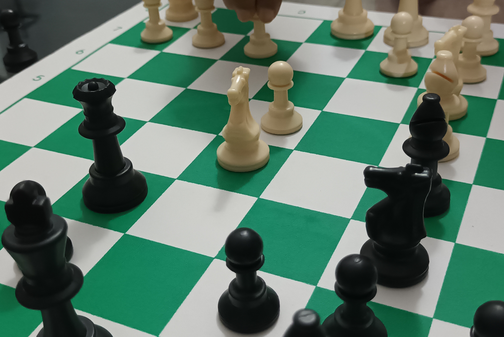

Introduction
I love to do sports. I have been doing sports since my childhood and it has helped me a lot in my life. As a hobby I play chess and badminton. I engage in this hobby specially during the evening hours. I either play badminton with my friends and siblings or play chess online or with my siblings.
There are different types of sports. It can be a solo game or a team sport. Badminton can be considered as a solo game when playing singles or a team sport when playing doubles. Similarly chess can be considered as a sologame. Apart from these two sports there are other team sports like football, basketball, netball, cricket and other solo sports like checkers in which you can engage yourself but no matter what you select to do you should always select the ones that you like to do.
Doing sports helps you a lot in many ways. One of the foremost advantage is physical fitness and mental wellbeing. Neverthless it helps you to forget your worries and relax. Moreover, team sports help you in increasing your team spirit, become social and also helps you in understanding on how to work coordinately which is very important in the current society. Furthermore games like chess aids you in improving your problem solving skills, increasing your concentration and memory capacity.
Here are some tactics on how you could improve your skills in sports

For chess
- Practice daily if possible
- Try to solve tactical puzzles available online
- Study new openings
For badminton
- Practice as much as you can
- Learn match winning tactics from experts